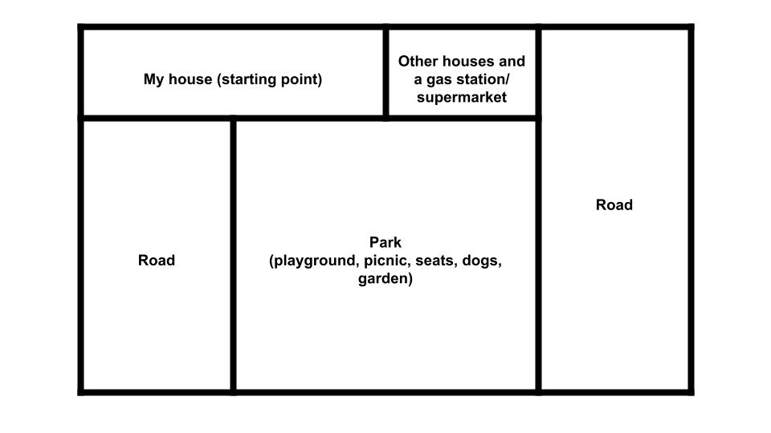
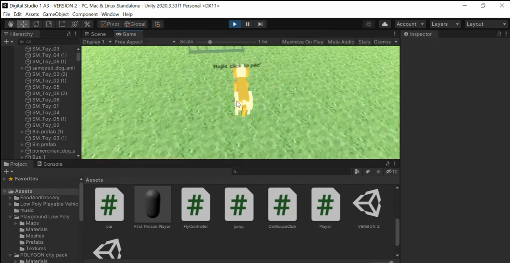

I designed and produced a 3D digital environment with Unity. It was constructed around a special old memory that is meaningful to me. My core concept of this assignment is my childhood environment that I was surrounded by. I designed a park as the main location of my environment. In real life, this park is a seven-minute walk from my house and has been a significant part of my childhood memories as I would often go with my parents, siblings, aunty, uncle and my pet dog on a saturday afternoon. Furthermore, during lockdown and online learning, I would go on a walk to the park if I needed a little break from school and so it was a location that relieves stress and brings peace for me.

During the process of creating my world, I noticed that 3D design is very much different to 2D design. There are many more elements to consider when it comes to 3D-design such as lighting, camera angle, perspective, sizing, sound etc. Sound in this project was slightly different to the 2D icon design assignment. Sound in Unity was more to create a realistic environment, such as adding bird chirping sounds, character walking sounds etc. However, both 2D and 3D-designs undergo similar design thinking processes.
I used low poly style assets for my Unity world. I included sound interaction by adding dog barking noises onto animated dog figures that I found from the Unity asset store. When the player explores the world and finds the dogs, they should see a sign on the dogs, saying to pet them. When they click the dogs, they should have different dog barking responses.
I got other people such as friends and family members to perform the play testing rather than myself as I understand my own concept of the environment from the beginning. Therefore I know exactly what is happening in my environment. Allowing another individual to playtest is a more suitable option as their feedback can tell me what is good and what is missing in the Unity project. The feedback I receive has improved my general environment. I have a video of a friend playing in my environment for the first time. From that experience, I realised an important element that I needed to include, that is to insert barriers in my world to avoid the player from falling out of the platform. Below is the video of my friend playtesting my environment.